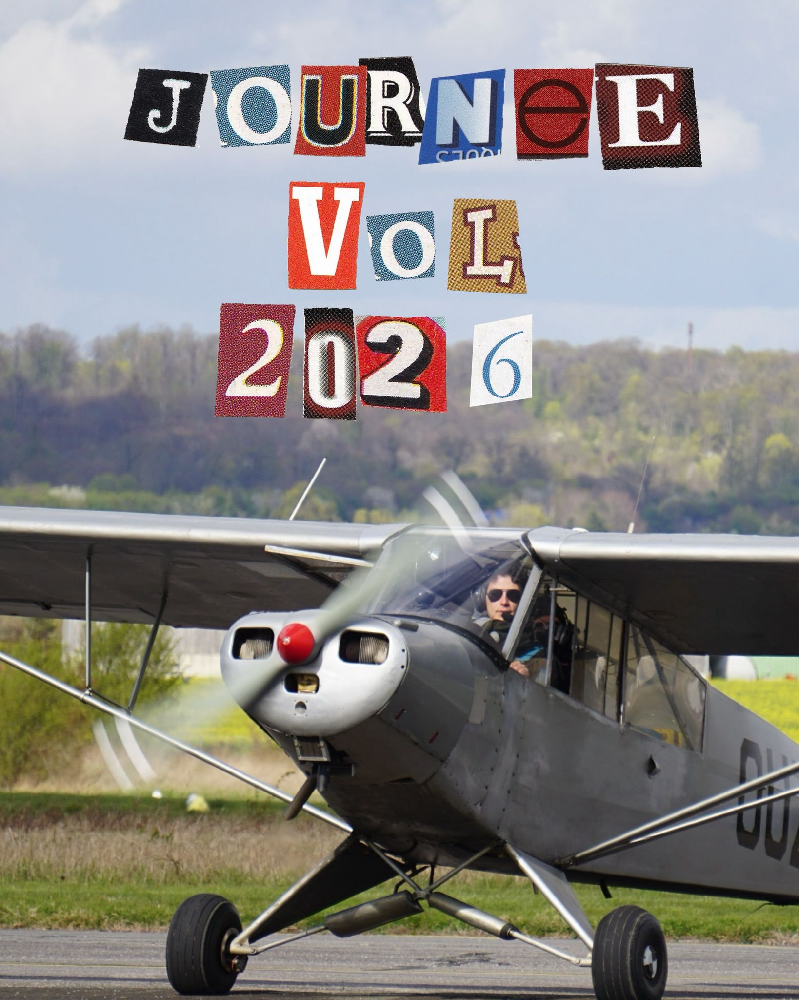
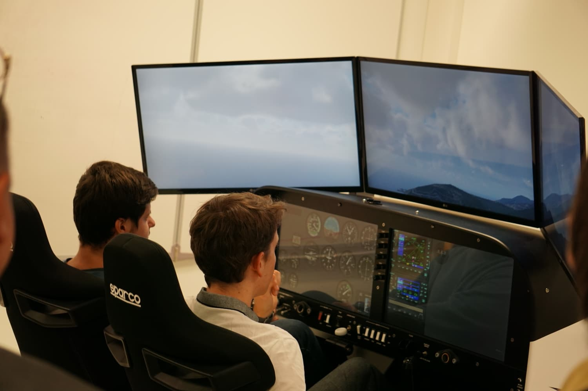

Journée vol du 28 mars 2026
Le samedi 28 mars 2026, le pôle Sport du CAE a organisé sa fameuse journée vol, pour un vol découverte au-dessus des Yvelines au départ de Saint-Cyr à l'Aéroclub des Alcyons.
L’adrénaline et la passion du sport aérien !
Chaque année, le CAE vous embarque pour une journée vol inoubliable au-dessus des Yvelines ! Que vous soyez passionné d’aéronautique ou simplement curieux, c’est l’occasion parfaite de découvrir les sensations magiques du vol en avion léger. Au départ de l’aérodrome près de Saint-Quentin-en-Yvelines, vous survolerez des paysages superbes, entre champs, forêts, châteaux et villages pittoresques. Et parce que le plaisir ne s’arrête pas là, la journée se poursuit au sol autour d’un apéro convivial et d’un bon barbecue, pour partager rires, anecdotes et souvenirs avec les autres membres. Sensations fortes, bonne humeur et esprit d’équipe garantis !

Le samedi 28 mars 2026, le pôle Sport du CAE a organisé sa fameuse journée vol, pour un vol découverte au-dessus des Yvelines au départ de Saint-Cyr à l'Aéroclub des Alcyons.

Le samedi 5 avril 2025, le pôle Sport du CAE conviait les membres à prendre leur envol pour un vol découverte de 30 minutes au-dessus des paysages des Yvelines, au départ de l’aérodrome des Mureaux, en collaboration avec l’Aéroclub du Val de Seine.

Le samedi 6 avril 2024, depuis l’aérodrome des Mureaux, grâce au partenariat avec l’Aéroclub du Val de Seine, chacun a pu s’offrir un vol découverte de 30 minutes au-dessus des paysages vallonnés des Yvelines.

Le pôle Sport du CAE, en partenariat avec le département Recherche de l’ESTACA, dispose de l’exploitation d’un simulateur sur vérins hydrauliques ! Il offre une expérience immersive permettant de ressentir les sensations du vol tout en restant au sol.
Ce simulateur reproduit avec précision diverses conditions de vol, des manœuvres basiques aux situations complexes, ce qui en fait un outil précieux pour l’apprentissage et l’entraînement des membres !
Tous les jeudis après-midi, les membres du CAE peuvent réserver des créneaux pour perfectionner leurs compétences ou découvrir le pilotage dans un cadre réaliste et contrôlé. Une opportunité unique de vivre l’aviation autrement !


Découvrez nos stages pour faire le plein de sensations fortes !

En juin 2024, le pôle Sport a organisé un stage planeur de 5 jours à l’aérodrome d’Angers Marcé. Ce séjour a offert à nos membres une immersion totale dans le vol non motorisé, leur permettant de goûter à des sensations inédites et de vivre une expérience aérienne toute en douceur et maîtrise. Une belle aventure où la nature et le ciel se rencontrent pour le plus grand plaisir des passionnés !
Le pôle Sport du CAE propose un accompagnement pour ses membres avec des cours de soutien dédiés à la préparation du BIA (Brevet d’Initiation Aéronautique). Ces sessions permettent d’aborder de manière claire et progressive les connaissances théoriques indispensables à la réussite de cet examen, tout en partageant la passion de l’aéronautique ! Le pôle organise également des travaux pratiques destinés aux étudiants de 2ᵉ année en technologie aéronautique. Ces ateliers offrent une mise en application concrète des concepts étudiés en cours !